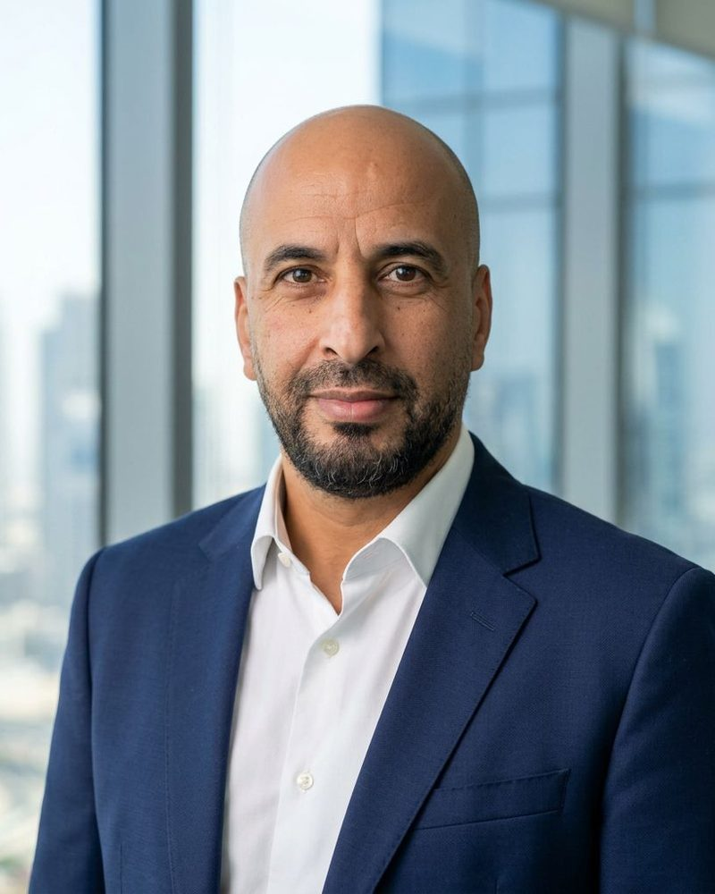
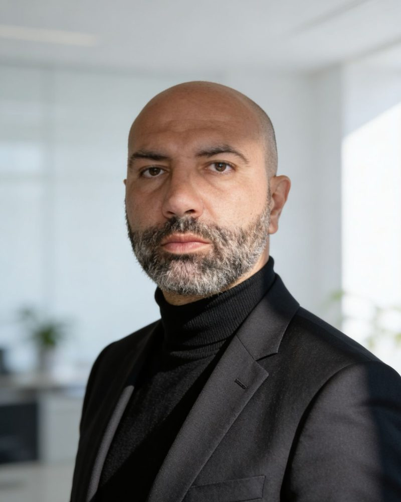
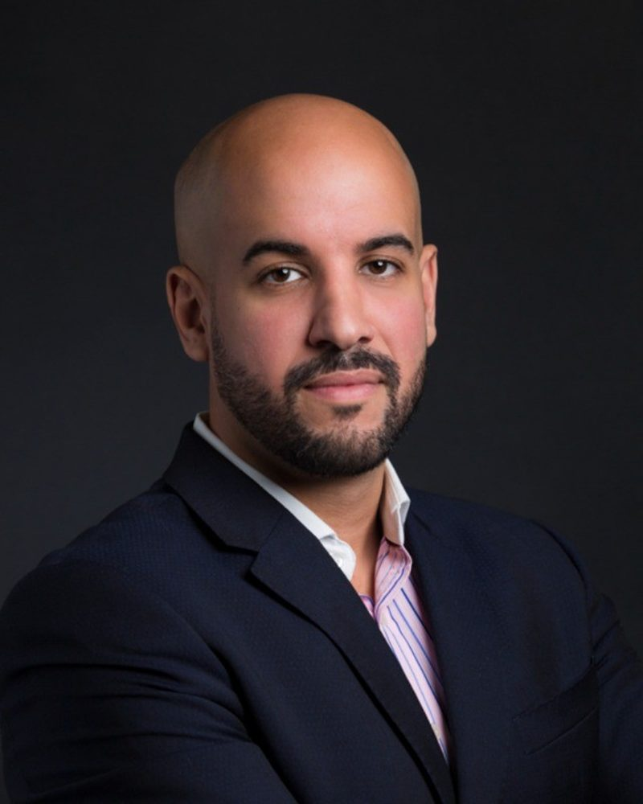
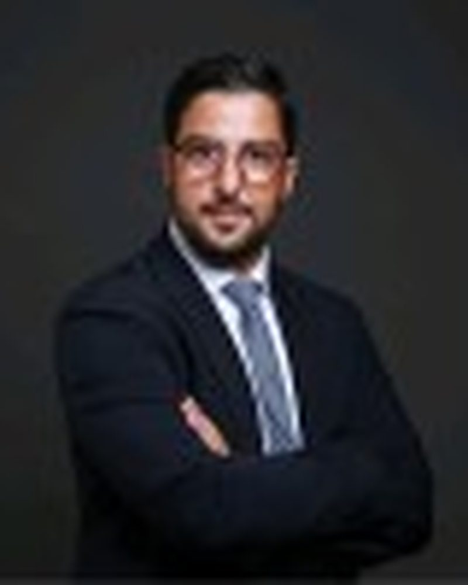

Hafi Nizar
Co-fondateur, DPS Market
Achats et production
Membre fondateur de DPS. Il a bâti la colonne vertébrale achats et supply chain du groupe, et pilote la stratégie de sourcing et l'efficacité opérationnelle.
Distribution, restauration, finance : chaque société du groupe est dirigée par son fondateur opérateur. Des décennies de relations et d'expérience entrepreneuriale qui profitent à chaque entreprise accompagnée.
Les fondateurs
Six fondateurs qui réunissent, en interne, l'ensemble des compétences opérationnelles et financières critiques.

Co-fondateur, DPS Market
Achats et production
Membre fondateur de DPS. Il a bâti la colonne vertébrale achats et supply chain du groupe, et pilote la stratégie de sourcing et l'efficacité opérationnelle.

Fondateur et directeur général, DPS Market
Plus de vingt ans dans la distribution alimentaire
Il dirige DPS depuis 2008 et a transformé un distributeur de niche en premier cash and carry halal de France. Expertise approfondie en gouvernance, licences de marques et exécution de fusions-acquisitions.

Conseiller stratégique, fusions-acquisitions et stratégie
Directeur général adjoint, Evernex
Plus de quinze ans d'expérience senior en ventes, marketing, planification stratégique et fusions-acquisitions. Architecte de l'expansion internationale d'Evernex à travers des acquisitions transfrontalières de référence.
Co-fondateur, Big M
Opérateur et bâtisseur de marque
Il a fait passer Big M à plus de 75 restaurants en France et en Afrique. Expertise reconnue en communication de marque, marketing et développement de franchise à l'échelle nationale.
Co-fondateur, Big M
Stratégie, finance et relations investisseurs
Entrepreneur aguerri, avec une expertise en gestion, comptabilité et marketing. Il joue un rôle central dans les levées de fonds et le développement du réseau d'investisseurs du groupe.

Associé fondateur, finance et structuration
Plus de quinze ans en banque d'investissement, Londres et Paris
Ingénieur financier et structureur, avec un parcours dans des banques d'investissement de premier rang. Pionnier de la finance éthique en Europe.
Gouvernance
Un distributeur et un restaurateur, complémentaires par nature, réunis sous une même bannière avec une structuration financière assurée en interne.
Créé en 2001, premier cash and carry halal de France. 45 entrepôts en propre et en franchise en France, en Espagne et au Sénégal, un catalogue resserré de plus de 2 000 références et des marques propres.
Créé en 2019 en région parisienne, Big M est la marque challenger de la restauration rapide halal : plus de 75 restaurants dans trois pays et une plateforme de franchise réplicable.
Direction opérationnelle
Les dirigeants qui opèrent au quotidien les restaurants et les services du groupe. Photos et parcours détaillés à compléter.
Directeur général, Big M
Il pilote l'exploitation du réseau, le suivi des ratios clés et l'accompagnement des franchisés.
Fondateur, The Follow Movement
Plus de dix ans d'expérience. Il dirige l'agence créative intégrée du groupe, spécialisée dans l'univers food and beverage.
Directeur marketing, The Follow Movement
Plus de cinq ans d'expérience. Il conçoit les campagnes à fort engagement qui accompagnent le déploiement des enseignes.
Notre histoire
Une expansion continue du cash and carry, ponctuée de lancements sélectifs de nouvelles activités.
Premier entrepôt DPS Market de 300 m² à Épinay-sur-Seine.
Passage au cash and carry intégral, élargissement de la gamme, nouveaux entrepôts à Villeneuve-la-Garenne et Nanterre.
Beauvais, Vaulx-en-Velin et deux entrepôts supplémentaires en Île-de-France.
Création de Big M à Bondy. DPS s'étend vers l'ouest avec Saint-Herblain et Nantes.
Ouverture de Dakar, lancement du modèle de franchise DPS Market Place, ouverture de Strasbourg.
Metz, Saint-Ouen-l'Aumône, Angers, Creil. Le réseau atteint une taille critique en France.
Madrid, Toulouse, Avignon, Brest, Chambéry. Acquisitions d'All Day Snack et de la master-franchise Fatburger. Premier restaurant financé par sukuk à Toulouse.
Arrivée de Crispy Mom en grande distribution, lancement de NOXX, nouvelles ouvertures en France et à l'international.
Nos principes
Elles guident chaque décision d'investissement et chaque relation avec les entrepreneurs.
Nous exploitons pleinement les possibilités de création de valeur en anticipant avec patience les transactions, avec des allocations de capital qui correspondent aux exigences fondamentales de l'entreprise et du marché.
Notre compréhension approfondie des entreprises et des marchés dans lesquels nous investissons nous donne une vision claire de notre trajectoire. Nous restons fidèles à notre chemin.
Nous sommes nous-mêmes des acteurs du marché. Nous orientons nos ressources, notre vivier de talents et notre réseau vers les entreprises dans lesquelles nous investissons.
Notre flexibilité nous permet de nous structurer différemment et de trouver des solutions adaptées, tant au niveau actionnarial qu'opérationnel. Aucun défi commercial n'est insurmontable.
Nous aimons ce que nous faisons et valorisons la dimension humaine de l'investissement et des relations qui contribuent à la réussite.